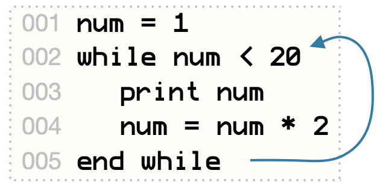

Another way to loop is the for loop. It repeats the lines of code between for and end for, but also assigns values to a variable (called the loop variable) as it goes. The loop exits when it has gone through all the values in the range.

When a computer is programmed to do something multiple times, it is called looping. The computer is like a robot running around a racetrack, doing the same thing over and over.
One way to do this is with a while loop. A while loop repeats everything between while and end while, as long as the condition after while is true.
Try this while loop, which repeats lines 3-4 as long as num is less than 20:
The condition can be anything. It can even be true, which makes an infinite loop.
Break out of an infinite loop with the break command, or by pressing Control-C.
Change the loop above so that it prints numbers up to 1000.
Here’s a fun little guessing game. Change the number in line 1, and have somebody else play; then switch roles. (Come back to this program after you’ve read page 32, and make the computer pick a number by itself!)
Another way to loop is the for loop. It repeats the lines of code between for and end for, but also assigns values to a variable (called the loop variable) as it goes. The loop exits when it has gone through all the values in the range.
The for loop here counts from 10 down to 1. The wait command pauses for 1 second.
If you need to exit a for or while loop early, just use the break command. break jumps immediately to the next line after end while or end for.
Change the guessing game on the previous page so it uses a for loop that allows only 5 guesses. Break out of the loop if the user guesses correctly.